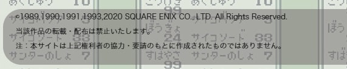

React/Next.js
React
Reactとは、WebサイトやWebアプリのUI部分を開発する際に活用するJavaScriptライブラリです。ReactはMeta (旧称Facebook社)が開発し、2013年にオープンソース化されました。
ReactはJavaScript用のフレームワークと勘違いされることがありますが、実際には上述の通りライブラリとなります。
ライブラリなのでCDN経由でhtmlファイル内でReactのライブラリを使用することができます。
以下は実際にReactのライブラリを使用して書いたものです。
↓クリックでcounter増加
ソースコード（抜粋）
react_next.html<head>
<script src="https://unpkg.com/react@18/umd/react.development.js"></script>
<script src="https://unpkg.com/react-dom@18/umd/react-dom.development.js"></script>
</head>
<style>
#root {
cursor: pointer;
font-size: 20pt;
background-color: lightblue;
color: black;
padding: 10px 1px 5px 1px;
}
</style>
<div id="root" onClick="doCount();">wait....</div>
<script>
let counter = 0;
let dom = document.querySelector('#root');
doCount();
function doCount() {
counter++
let element = React.createElement(
'p', {}, "counter: " + counter
)
ReactDOM.render(element, dom)
}
</script>
JSX(JavaScript XML)
とは言えCDNは、主に学習目的または小規模のアプリケーション目的で使用することが適しています。通常プロジェクトでこのような使い方をすることはまずありません。
大規模な開発をする場合、Reactでは、JSX(JavaScript XML)というJavaScriptの構文拡張を使用します。JavaScriptファイル内にHTMLのようなコードを記述できるようにするものです。Meta（旧Facebook）によって開発されました。
たとえば、次のようなJSXコードを書いて、単純な見出し要素を表示することができます。
const heading = <h1>Hello, JSX!</h1>;
このコードはHTMLのようにも見えますが、JavaScriptのコードです。headingという定数を作り、その値がJSX式の結果となります。
JSXを記述する場合、ファイルの拡張子は.jsxとします。さらにこれにTypeScriptを適用する場合、拡張子は.tsxとします。
コンポーネント
Reactでは、自分が書いたマークアップ、CSS、JavaScript を、独自の『コンポーネント』と呼ばれる、アプリのための再利用可能な UI 要素にまとめることができます。
common_footer.tsxconst url_template = "https://template-party.com/"
const rightMap = new Map()
const sagacolleLabel = <>
©1989,1990,1991,1993,2020 SQUARE ENIX CO., LTD. All Rights Reserved.<br/>
当該作品の転載・配布は禁止いたします。<br/>
注：本サイトは上記権利者の協力・要請のもとに作成されたものではありません。
</>
export const sagacolleKey = 'sagacolle'
rightMap.set(sagacolleKey, sagacolleLabel)
export default function CommonFooter(labelKey: any): JSX.Element {
return (
<div>
<footer>
<p className="rights">
{/* */}
{rightMap.get(labelKey.footerLabelKey)}
</p>
<span className="pr">《Web Design:Template-Party》
</footer>
</div>
);
}
common_body.tsxexport default function CommonBody(body: any): JSX.Element {
<body>
<section className="box">
{body.message}
...
</section>
<CommonFooter footerLabelKey={body.footerLabelKey}/>
</body>
}
画面のフッター部分をコンポーネント化したもの。CommonFooterと言う名前のコンポーネントをcommon_footer.tsxに定義。common_body.tsxでフッターを呼び出す。
<CommonFooter footerLabelKey={body.footerLabelKey}/>が呼び出し部分。

React Hooks
React Hooksはフック(Hook)によって関数コンポーネント内で状態やライフサイクルを扱うための機能です。
ReactではこのReact Hooksを利用してリアクティブなシステムを構築していきます。
公式が提供しているフックは10種類あり、さらにフックを組み合わせてカスタムフックを独自に実装できます。
| フック種類 | 用途（概要） | フック名 |
|---|---|---|
| 状態のフック (State Hooks) | 内部状態を持ち、その状態の変化に応じて表示を変更できる。 | useState |
| useReducer | ||
| メモ化のフック (Performance Hooks) | 値や関数を保持し、必要のない子要素のレンダリングや計算を抑止するために使用し、パフォーマンスの最適化を図る | useCallback |
| useMemo | ||
| 副作用のフック (Effect Hooks) | 副作用（コンポーネントの描画とは直接関係ない処理のこと）のためのフック。外部システムとの同期、イベントリスナ。 | useEffect |
| useLayoutEffect | ||
| Contextのためのフック (Context Hooks) | 親の変数を子コンポーネントで受け取る | useContext |
| refのフック (Ref Hooks) | レンダリングに使用しない情報を記録 | useRef |
| useImperativeHandle | ||
| Other Hooks | ライブラリ開発時に利用されるHooks | useDebugValue |
Next.js
レンダリングについてはこちらに記載しているので、その他Next.jsの主な機能について記載します。
ファイルベースルーティング
pagesディレクトリ内のファイル構成がそのままアプリケーションのページ構成になる。
pages/index.tsxの内容がトップページとしてレンダリングされます。
Next.js ではApp というコンポーネントを使用して全てのページを初期化するようになっています。
pages/_app.tsx を作成することで、Appコンポーネントをカスタマイズができるようになります。
全ページに共通のcssを適応するなど、すべてのページで共通な処理などを書くことができます。
また、pages ディレクトリ配下にスクリプトファイルを配置すると、それを使って画面表示を行います。
例えば以下の場合に http://[ホスト名]/saga1/ability/ability_detail というurlで ability_detail.tsx の内容が表示されます。

作った物
- 魔界塔士サガの仲間モンスター一覧
- 変身後モンスター算出
- 能力一覧
モンスター詳細情報のまとめ。
各モンスターの詳細画面と、変身後モンスター算出の詳細欄にお暗示内容が出力される。
同じ内容を書きたくないので、body部をクラス内に記載し、それを詳細画面と変身後モンスター算出の詳細欄の両方で流用する形にしている。
モンスター情報

モンスターが使用する能力の詳細。
画面のレイアウトをReactで記載し、表示する情報自体はDBに格納。
URLからIDを取得してそれをもとにDBから情報を取得して画面にレンダリング。
能力詳細

参考